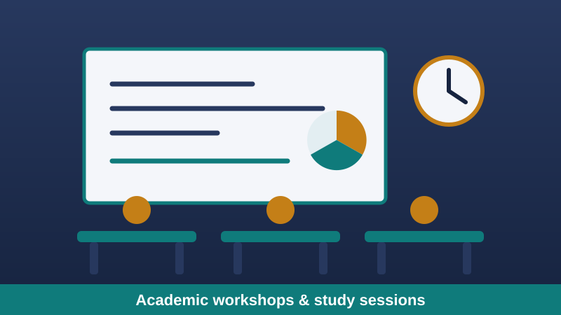

What's on around campus
Four kinds of event you will find in the directory. Use the buttons to cycle through them.

About the App
What this application is for
Information about student societies, clubs and school events is currently scattered. Some of it sits on the Adelaide University Student Portal, some on individual degree program pages, some on social media, and some only exists as a flyer pinned to a noticeboard in a building you had no reason to walk through. A student who does not already know an event is happening has no reliable way to discover it.
That fragmentation has real costs: events are under-attended, networking opportunities are missed, and first-year students in particular can go a whole semester without connecting with the community around their degree. Adelaide Campus Events addresses this by acting as a single centralised hub where every event is listed in the same format and can be searched in one place.
How it helps students find events and make connections
- One list instead of six sources. Every event is recorded with the same details — title, category, date, time, mode, location and a description — so two events can actually be compared.
- Search by what you care about. A student who wants to find programming events types "git" or "code" and sees them immediately, rather than scrolling a noticeboard hoping to spot one.
- Filter by interest. The category filter narrows the list to Academic, Careers, Cultural, Social or Sports, which makes the directory useful to a student who knows the kind of thing they want but not the name of any specific event.
- Peer recommendations. Marking an event as recommended moves it into a dedicated section at the top of the page and changes its badge colour, so a student arriving at the directory for the first time can see what other students thought was worth attending.
- Student representatives can contribute. Society organisers add their own events through a form rather than emailing somebody and waiting, which is what keeps the directory current.
Key features of this system
- Create, view, update and delete events, with confirmation before deletion.
- Keyword search and category filtering.
- Three sort orders: soonest, latest, or alphabetical.
- A separate section for recommended events.
- Input validation with error messages on the field that failed.
- A login restricting access to the directory.
- Events saved in the browser between visits.
- A live date and time in the footer.
About Me
Things about me
My name is Archie The and I am astudent at Adelaide University, studying the Bachelor of Mathematical and Computer Sciences. this application for Assignment 3 of INFO 1012 Information Technology Systems.
My studies and academic interests
So far this course has covered how a computer works in general. From web technologies to internet architecture and the TCP/IP model, HTML, CSS and JavaScript. Earlier assignments involved [For example: writing C# console applications, and building a weather data dashboard in Excel with pivot tables and conditional formatting].
The part I have found most interesting is how a single page request travels down five protocol layers and back up again, because it makes something I use every day make actual sense.
Events I have would like to attend
- General meet up events Having a chance to connect with other students and faculty in a non class setting
- Volleyball Socials Having an activity that is not related to studies would be a good break from academic work.
- Computer Science Study Group just learning more about computer science things and having more hands on practice would be nice.
These three events are listed in the Events Directory, where the ones I would recommend to other students are marked.